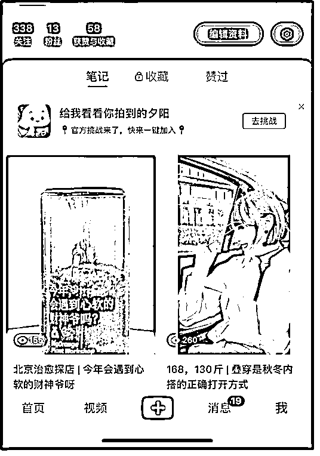

来源：https://i0i7zmraov0.feishu.cn/docx/AUFtddQyKozkegxnCmhcLbh2nqn
我把自己叫做“勇士”，因为我作废了8个账号，我却从中得到了真正的成长，找到了事业的长久赛道。
从平台来说，包括视频号、抖音、小红书。从赛道来说，包括个人成长、穿搭、好物种草、自媒体运营等等。
其中有很多是介绍素人做的赛道，如个人成长、穿搭、种草等。
还有一些与自己做的项目有关，如AI绘画、元宇宙等。
对我来说做了这么多账号，它们的共同点好像只有一个，就是都没有活过两个月，我就放弃了更新，但是放弃更新后，我又会很快开启另一个新号，所以我的自媒体生涯已经快一年了。
今天我把我的失败故事复盘给大家，同时我也不断地去用【今日之我】反思【昨日之我】，当时有怎样更好的选择？
参加生财之后，看到大家都在鼓励【表达】，【沉默者是表达者的红利】。反复、长期、高频率地这么说，我就认为要做自媒体。
自媒体那么多赛道，不知道做啥就选择了个人成长类。
这是我第一个账号，用时2个月，内容就是洗爆款。其中有几个让我觉得很惊慌的时刻。
A，但凡有朋友看见我这个账号，我心里是崩溃的，我觉得完了，因为我说这么蠢的话，居然被你们看见了。
B，还有朋友为了支持我，把它转到了朋友圈，我恨不得当场就把这条视频删掉。
很多账号都是火于爆款，而我这个号，其实是【死于爆款】。
当时稻盛和夫去世，我发了一篇，自己写的，把它联系了中日国运的对比。当天晚上9点多钟开始写，10:00写完，录视频的时候头都没洗，因为就觉得那天晚上必须发出去，发出去之后，我就去打游戏了，一盘结束，我看2.8万播放量了，我就傻了。
然后就听大家的，视频爆了就立刻直播，我就点开了直播，不知道说啥，又很草率地、内心很崩溃地结束了。
其实爆款出现这个事儿给我造成了很大的心理压力。具体体现在几个点：
A，对于这个东西有2万多播放量，我没做好准备，很慌。
B，爆了之后，迅速把我推到了一个【爆了之后干啥】的情境中，我不知道该干啥，很恐怖。又不知道干啥，又必须利用爆了的流量。心理压力很大。那一瞬间我内心都不希望它爆，有个声音一直在喊：我还没准备好。
C，因为大家说，视频爆了开直播，我非常仓促、惊慌地开了直播，短短的直播过程我也不知道说了啥，实在忍受不了自己10分钟的胡言乱语，我就关了。
D，关了直播之后，我就自我批评，为啥视频发完我就打游戏了？这种蹭热点的视频，发了之后我应该盯着啊。我的这个自我批评也很耗能。
爆款之后，我对接下来的数据有了过高的期待，自己的目标是下一个3万，4万，甚至5个之后我要达到40万。
而且我对自己的能力，也有了不切实际的评价，开始在视频中提高了原创的比例，不那么像素级地洗稿了。
但是，播放数据是：412、706、286、331。我就崩了。这个账号就挂了。
A，预期不切实际。我第一个号，明明技能和心力都没有准备好，却总期待开始做视频就马上有人看，爆了视频就马上变现。这种自身实力与预期的巨大冲突导致我肯定会崩。
B，情绪内耗太严重。前面说了爆款带来的内耗。我的亲人朋友看到我的视频，我也有情绪困扰。一句话，脸皮太薄。
C，做了个爆款，就飘了。然后就摔地上了，就崩了。
A，即使是洗稿，回头看它，我的筛选、选择、增减、改编，仍然展现了我的灵魂。我的那些洗稿视频仍然体现了我自己。它算是我做的最走心的号。所以，大家真的不要抗拒【洗稿】。
B，情绪上要扛得住摔打，要糙一点。爆款没啥，数字走低也没啥，爆款了没准备没有及时开视频也没啥。
C，及时跟进热点。
D，个人成长号就是要养成，就是要走一条很长的路。做好长期抗战的准备。
这个号是因为我公司当时做一个元宇宙相关的项目，想在自己的私域中沉淀一些用户流量，就做了这个号。
公司安排了专人写脚本，我只需要坐那口播。
因为我自己不是很爱干活，如果每个环节都要我自己干，我就会放弃。所以，这样的安排降低了我自己的劳动成本，这个账号一定能走下去。
在与小伙伴的合作中，凸显了很多问题，让我发现自己是个特别挑剔的人。挑剔的点包括但不限于：
A，内容太初级，太尴尬，我自己接受不了，没法口播。
B，内容略低俗，擦边，我自己都不会看，怎么能播？
A，磕磕绊绊的合作，始终让我把握不好与小伙伴之间的互动关系。是完全放弃自我，做一个工具人？还是去影响小伙伴，把控内容？如果要把控，究竟怎样把控？流程怎样？怎样一边否决他们的工作，一边又保持高涨的士气？
B，全部由小伙伴操刀的内容，进而让我觉得【讲的不是自己的东西】，就丧失了继续搞下去的热情。
C，在搞这个账号的同时，我搞了下面第三个号，用在这个号上的时间、精力都很有限。这个号也就无疾而终了。
A，不能因为投资的某笔钱少，而不认真对待。同样，起号的时候，自己要干的事儿少（或简单），绝不是投入做某个号的理由。
B，团队间的合作，要区分不同岗位的职责边界，要迅速建立起生产内容的流程。
C，要热爱自己的小伙伴，对人不要“完美主义”。先要求小伙伴达到“基础工作量”再谈其他。
D，不要用自己的爱好或者品味来评价视频是不是可以爆。一切只依靠数据，要客观。
E，自己作为创业者，要知道自己的时间和注意力是最宝贵的财富。一个东西，要深思熟虑之后再开始，不能随便开始。你随便开始的概率越大，随便结束掉的概率也就越大。
已经做账号了，所以我非常想学习自媒体运营，天天刷学习的短视频。很快，所有平台都只有自媒体内容推给我了。
这时，生财的“卖空气”启发了我。不管我会不会，只要大家需要，我可以先卖。
把别人的视频转成文案，有的像素级模仿，有的修修改改，洗别人的视频，干了一段时间，我干的特别开心，因为输出是最好的输入，通过输出我能感觉到自己学到的知识特别实际。
但是我被一些黑粉的评论击溃了。
比如我说到今年的三个趋势，下面的喷子就说：“所以你现在在干啥呢？”我说到一些流行玩法、运营技巧，下面的喷子就说：“你有那么多道理，你自己倒是火一下啊！”
我心里想：“妈的，你说的对啊！我自己都不知道怎么火起来，你让我教别人怎么火。”我确实很心虚。自己的账号，只有111个粉丝，我凭什么教别人怎么火，这些东西真的靠谱吗？我就崩溃了。
当时这些话，对我的杀伤力太大了。崩溃后，我就开始各种自我怀疑，到现在手机里还有好些已经拍了但是没有发出去的视频。我面对镜头的时候，也彻底失去了信心，不愿意再继续。
A，虽然这个号我没起来，但是我特别快乐，学习也快乐，分享也快乐。所以，伙伴们，无论你开始学习哪块内容，顺手录视频发出去，真的是性价比特别高的做法。比如咱们开始小航海，不管上哪条船，如果能顺手把自己每天学到的东西，分享出去，这绝对是性价比最高的一个行动。
B，内心要足够强大，无视黑粉。并且要感谢他们的言论，盘活了数据。
C，做号的时候要尽量多地找到一些【同行者】。和一群人一起走，你就会发现自己遇到的问题，别人都会遇到。那么自己就可以学别人的应对态度。如果那时我有很多同样起号的好友，和我交流黑粉的盘活数据作用，和我交流虽然粉丝不多但是精准粉丝的价值很高，那么我就有更大的概率避免内心的崩溃。
第3个号结束之后，我大概有2个月没做自媒体。但是，我还是不想承认失败。就开始做这个号。
为什么会做这个赛道？是基于第一期AI绘画的航海。
当时我想，每天AI绘画做出来这么这么多的图，我是不是可以把它放到网上，做一个AI绘画博主？
接着我就在小红书上搜，已经有很多博主在做了，说明这条路可行。那我就开干。
我做这个号的时候，每天特别勤奋，因为你每天做的时候，会产出很多的图，有很多图自己就特别喜欢，然后上传。
直到某天的某篇笔记，数据突然特别好，标题也是我自己写的。
当时出了兔年的邮票，特别特别特别的丑，我就做视频里说，我们用AI来做一个兔年的邮票，你们大家觉得我画的怎么样？
然后用户反响就不错，就会引起讨论，有的人说确实比发行的好，有的说不好等等，反正就互动特别多，数据特别好。
这个时候我也不知道为什么，只要数据一好，我心里就地动山摇，就开始崩溃了，就在自我加戏。
我就想，这数据能有啥用？到底能干啥？航海手册上对于变现写的也很模糊，不像其他的航海都非常的明确。
然后我就翻起其他AI绘画的博主，看他们是否挣钱。翻到一个，说接商单20块钱一张。我就在想，我差这20块钱吗？遂果断放弃。因为我觉得即使火了，我也看不上20块钱。
A，选择任何赛道之前，要了解这个赛道的变现方式及平均客单，及变现天花板。
B，给自己的时间及注意力【估价】。利润空间少的赛道，从商业角度来说可以放弃。
C，从生产者角度来说，不应该轻视赚小钱。跑通【商业的最小单元】，从0到1，其实意义很大。
D，一个赛道中，存在不同单价的业务，也存在不同规模的经营者。单价零售可能是20，高客单价有可能达到2000。还有人解决流量问题后，每日成交1000-2000单，盈利就还可以。也有人完成最小规模的商业跑通之后，立刻卖培训，建立收费社群，这都是盈利方式。
因为本人穿搭水平特差，男友的审美水平非常靠谱，且喜欢毒舌我。每次被毒舌我都让他帮我挑。结果，你们懂的，他不会像指导异性同事异性同学一样干脆利落地给我意见，反倒让我自己好好找。
我就崩溃了，只能求助于小红书。
看到了很多穿搭博主，除了明星穿搭之外，还有素人改造类。就是本来不会穿衣服的人，在上头求助，问大家怎么穿的更好看。我就突然又跃跃欲试了，心想：“扶我起来，我也可以。”
所以，做了这个号。
一边生产视频，一边陷入了严重的情绪内耗，自我挣扎。
我一方面认为，自己必须特别好看，才能够自我展现，去看大量明星号、大网红号，与他们相比，陷入严重的自我否定。
另一方面，我又去看素人博主，比如背景妖艳的、羽毛加小射灯的、衣服像抹布的，数据贼好，马屁评价贼多。这对我的审美观、创作观都产生了很大影响。
一边做，一边去请教各种老师。
有的老师直接劝退，说我是个素人，素人穿搭赛道太卷了。
也有的老师建议我搞素人穿搭里的垂直赛道，比如“梨形身材”等，我看了很多，觉得我实在也不“梨形”，要用滤镜P，我也下不去那个手。
因为做这个号的过程，一直很拧巴，我内心没找到做它的最舒服的状态。又加上我开始“兴致勃勃地做了第7个号”，所以就不向这个号投入时间、精力了，它就挂了。
A，做自媒体首先要取悦自己，让自己舒服。自己生产内容，起码不要让自己内心有“负反馈”。所以，任何一个号开始的时候，要在最初的2-3个视频中找到让自己舒服的、不抗拒的“内容生产流程”。
自己舒服，自媒体不一定做得好。自己不舒服，绝大多数都会半途而废。
B，做自媒体，“冲突”很重要。它包括不限于代际冲突、性格冲突、角色冲突等。其实我想做这个号的点，是被男友毒舌。如果这个点记录下来，稳定地生产内容，也是一个不错的创意。因为它取悦了观众，并能让很多观众“共情”。
在和生财圈友交流的过程中，圈友胡桃也给过我一个思路，他说我应该做一个
生财圈友胡桃给我建议：“你应该做一个副业引流的账号，这样你对流量的理解、对大家的需求会更深刻。”我一听，你说的对呀，就开始干了。
只做了2天，2篇笔记。
我接受不了“装成一个副业拿到结果的人”，大谈副业。我自己都没跑过任何一个完整的副业项目，压根不懂，急忙忙就开始做了，一做就发现自己不能接受去骗人。
A，对副业引流的理解还是太狭窄了。这类视频中主播的角色可以是“副业高手”，也可以是“副业小白”，还可以是“带大家去发现的纯素人”。如果我向前文中第3个号那样，一边学习一边分享，这种状态我是能接受的。
在研究小红书的过程中，我发现了一个此赛道的账号，数据特别好，超多人评论催更，10天左右，就已1000多粉丝。
我想，自己从0起步的状态和它很像，可以抄它。随后搜索了大量的自媒体养成账号，很多博主的基调都是：自媒体第一天粉丝0个，第二天粉丝100，第三天粉丝1000个，第四天已经接到商单了。我心想，这么牛的吗？养成系这么好做，那我也来试试呗。
真实的情况是：第一天我0个粉丝，第二天我0个粉丝，第三天1个粉丝，我自己用小号关注的。
第四天对不起我不想更新了。
A，成功茧房：当时自己太天真了。刷到我面前的，都是已被大数据洗过无数遍的成功了的笔记，压根看不到失败者，以至于有了养成系都能爆的错觉。
所以，不要陷入平台给你推的“成功茧房”。
B，养成号真相：这种号的号主其实具有成熟的口播及文案能力，只是“表演了一个号的养成”。所以，能养成的是号不是人。这个人，必须要很成熟，有相当强的能力。甚至还要有投豆荚的能力。

我和一个线下朋友聊天，就抱怨了我的失败经历。她说：“我觉得你可以做好物种草账号呀，你看你推荐给我的东西，我就好多都会买，还没买的也种草了好多了，你天生有种草的能力。”
我第一反应是：“这算啥能力，不就是花钱花多了么，谁不会花钱呢。”
但是她认真地和我说：“科学的消费也是一种能力”。
然后我就留心自己过去的种草时刻，就发现，很多朋友都会被我种草，从我这拿链接。并且，我在种草的时候，内心非常喜悦。我就开始了。
我发现网上说话和现实中完全不是一回事。
我现实中会跟朋友说：“我说xx，你看这个东西怎么怎么好，我是啥时候买的，用起来我感觉怎么样”。我会说：“姐姐你看这个东西在xx场景下太好用了，你下周不就要去xx么，这个肯定有用。”
但是在网上，我没有说话的那个对象感，无法对镜头集中注意力，只能注意自己。
我只要一对镜头，我就在想，我在跟谁说话？我今天这个眼妆好像不太对称，我今天为啥口误了？我完全没有种草的那个状态，没有那个沉浸感。
A，口播的过程很煎熬。我看其他此类号主，感觉说的很自然啊，特有现场感和对话感。而我就很难受，恨不得镜头现场成精了，变成个妖怪来和我对话。
B，接受不了镜头里僵硬的自己。我自认为自己蛮可爱蛮有趣的，在镜头里却非常猥琐，丑到我自己都不敢看。我自己可能比较自恋，总给自己打95分，但是镜头里的我，只能得负分了，不可接受，就挂了。
A，破除自恋吧。每个人内心对自己的评价，与视频里的都是有差距的，平常心就好。实在接受不了，自己拍了视频可以不看。
B，新手对着镜头，都是没有对象感的。没有对象感，精神气场不能聚焦，体现在镜头里就特紧张僵硬。
可以找小伙伴帮忙当个线下沟通的对象人，也可以在真实事件发生时，做好随机拍摄。实在不行，对个人形大玩偶讲话，也可以。
从3月2日，我做废了最后一个账号后，其实我就一直在复盘。3月25日，参加了生财大会。26日，还没走的几位朋友一起组了个午餐局，局上逐一介绍分享。
大家都有自媒体，公号，我没有。所以我在介绍的时候，就说自己做废了8个号。在大家的鼓励下，我把自己废号的经历全盘托出。
因为分享，被很多大牛看见，得到了他们的鼓励和加持。紧接着，3月上旬我在北京一个线下活动，也分享了自己废号的经历。
正是因为分享，自己能够更全面、更真实地看待过去10个月的自己。也是因为分享，品尝了“分享红利”，得到了各种牛人的非常珍贵的指导。在他们的指导下，我对过去那个自己的理解更深入、更彻底了。
我发现了那么多失败的号，背后暴露了一些共性：
我去看我做的每个账号，一半以上都碰到过有可能要成功的地方。比如爆了一条视频，比如有人询问商单。但是往往这时我就放弃了。
总结下来，其实我自己没准备好成功。有的人有“金钱恐惧症”，我其实有“成功恐惧症”。我往往会在没拍视频的时候乱想：如果我视频爆了，我还没有想好卖啥怎么办？以至于我会去害怕视频曝，爆了也会害怕去看。
我自己对于赚钱，对于起号，非常随意和轻视。大家可以看到，很多号是随手就起的，是朋友说要搞啥我就搞了。
甚至我还能看到，有一些号我开始做了，不舒服了，想放弃了，我就会为了【放弃眼前这个号】而另起一个其他赛道的号。我能看见自己内心那个特别软弱的小孩。
我做任何一个号，对这个号的变现路径、平台上的平均客单价、同行的平均年收入都没有了解。更不用谈市场调研。有些号的主播角色有很多类，我只知道其中一类。
自己内心又不愿意洗课、卖课。
因此，对于任何一个账号能干啥，内心非常不明确。总感觉流量爆了，我粉丝多了，我也得不到什么。所以，但凡有一点麻烦，自己就不想做了。
作为一个创业者，应该紧密围绕自己的主业，带领团队去拼杀。市场上是靠“长板”制胜的，不是要弥补自己的短板。
是找到自己的优势项，找到市场的需求点，把二者结合的。而不是因为别人要做自媒体，自己也要跟风。
因为我已经创业了2-3年，有这个自我定位，所以对于一些过分夸大的内容，就没法接受。对于洗课卖课，我也没法去做。有几个变现逻辑很明确的赛道，由于和团队的利润诉求，也不太匹配。
我当时放弃它们，可能并没意识到，所谓的“心力不足，情绪内耗”的另一面，其实是匹配度很低，这些赛道都不适合我。
这点与上点有关，我做自媒体究竟为了啥？
如果我们做这个账号，很纯粹是为了挣快钱，马上挣到钱。那我去坚守一个需要很久才可以开花结果的赛道，并不一定明智。那我可能会考虑，在我的能力圈和能挣快钱的赛道之间，最大的交集是什么？找到它并all in。
如果我们做这个赛道，是为了一个更大的战略目标，比如说，我现在已经有一个在经营的项目，我做这个账号是为了给我的主业项目赋能，并且我对于主业有一个坚定且宏大的预期。那就应该在我们的账号里进行耕耘，主动的屏蔽噪音，不去看那些看似可以挣钱但是和主业无关的赛道。
人这一辈子，如果能做好一件事情，其实足矣。亦仁在互联网创业圈有现在的影响力，也只是因为经营了一个生财有术。我相信如果把精力分散到十个赛道，即使是同一个亦仁，得到的总收获也远小于一个生财有术带来的势能。
每个人都不是石头里蹦出来的，都有他背后的无数社会关系，有父母有家人。接纳自己的所有，是一种成熟，也是一种责任。
我做这几个号的时候，我爸曾对我说，虽然厂子很艰难，但是还是能允许你在北京折腾几下的。
连续做废了8个号，我一直都很愧疚，但是一直不愿意正视，更不愿意和我爸聊。因为在生财的分享，打开了自己，用更客观的眼光看待自我，接纳自我，还收获了很多良师益友，组建了我自己的“自媒体智囊团”。
因为有这些，我就在3月底和我爸聊了一下我10个月的自媒体收获，也想让我爸知道下一步我起号的赛道。
因为我的成长成熟有点创业者的样子了，就让老爸很欣慰，他也告诉了我家里企业的状况。
不聊不知道，一聊吓一跳，家里的企业各种负债蛮多的，实体经济受冲击很大，经营非常艰难，企业内部的各种关系也很复杂。
那我面临着2个选择。
选项A，再次开始起航，目标是起号卖课，或做文化传媒方面的业务（考虑过做商业访谈短视频）。
选项B，回家帮助老爸，承接家庭的企业，处理焦头烂额的各种复杂关系。
我找一位生财大牛咨询过。他也同意，选项B的难度是选项A的10倍，因为A是个全新的事儿。但是他说：“我感觉你会选B。”
是的，结果我选了B。
我为啥选了B？几个原因：
A，情感。父母对我付出很多，在我有能力多做一些的时候，我就应该多做一些，回报家庭。我之前不知道家里企业的艰难也就算了，我知道了就不可能脱身在外。
B，赛道优秀。功能性饮料和口服美容品，肯定是朝阳产业，未来会不断向上。要比我重新起号，选择一个前景未知的领域，更好。
C，基础好。工厂的生产线能力强，有国家专利，技术研发实力也强，为头部企业做代工做了几十年，只不过没有自己的品牌，没有销售渠道。如果基础不好，我也不会挺身入局。
D，产品好，让我大声叫卖不心虚。我选了2种代表性产品，一种已经开始启动了，是【红枣味脾多肽饮】，免费给朋友试用，试用的反馈都说不错。我自己经常服用也觉得很好。那我就有底气卖一个“真正好的东西”，而不是卖“我自己都不信的东西”。
E，因为前几点，使得我做这个事可以坚持一直做下去。
做废了8个账号，对我来说是扣分，还是加分了？
如果没有参加生财大会，没有勇敢分享，我可能还停留在自我指责的情绪内耗中，会一直认为自己是个失败者。但是通过分享，我心平气和地接纳自己过去的不足，找到了自己努力的正确方向，携带着做废了8个号的经验，以“经过摔打特训后的自我”，开始一段新征程。
是的，我认为做废了8个账号，对我来说是一次“强化特训”。
是的，我认为生财的最有价值之处，不仅在于它能促进、激发你的成功，更能接纳、复盘你的失败，并帮你反败为胜。
很多时候新人在开始做账号的时候，都不会去想，我为了做一个账号，需要付出什么努力，完成多少工作。却已经开始想我的账号起来之后，有多少商单，有多少的收入，多少播放量等等。但是，这些看似“美好”“鸡血”的场景，并不能帮助我们努力前进，达成我们想要的那个画面，反而会成为一个极度耗能的阻碍。
一旦工作不符合预期，比如前几个视频没爆，我们就会开始怀疑，是不是我做的不对，是不是我做的不好，我是不是不适合做自媒体？真实的情况是，你只是做的还不够多，你还远没有努力到要谈改进方法的地步。
方法和努力永远是一个看似悖论的场景。我们总觉得如果在一开始的时候，我们就能有一个最完美的方法就好了。那我们岂不是可以事半功倍？但是事实上，当我们还没有走到努力的尽头的时候，我们对于方法是否更好的理解，是非常肤浅的，我们并不能真正有效的判断，什么是好的方法，什么是有效的改进。很多所谓的“改进”，只是一种畏难情绪的体现。我们希望找到一个好像更easy的成功方式，不做什么就可以躺着挣钱。这个不是方法的改进，纯粹是一种妄念。
那我现在选择这条路，就要时刻关注自己的过程，做了哪些事，见了哪些人，拜访了哪些客户，理顺了哪些关系，了解了哪些背景信息。这就好比要做号，就好比，我新起一个号，关注我更新了多少视频，保持了怎样的更新频率，肯定更接近把号做好。
之前做号时，不知道每个号最终能干啥。现在聚焦于家族企业，明确了自己的目标：我做所有事的终极目标就是赋能实体经济，提供功能性食品和口服美容品。时刻检讨自己，离这个终极目标是更近了还是更远了。
成功，是我们变成一个更好的人的过程中所自然到来的结果。接受自己的“不完美”，同时在做事的过程中，不断“自我完善”。在此分享5个自我完善的小窍门：
A，找到你生命里的那本书那个人，每日对照该书，复盘且修心，经常去找那个人，让他耗费心力像浇灌小树苗一样浇灌你。
世界上有那么一本书，是让你实践出来的，让你活到自己的事业中、生命里的。每个人的这本书都不一样，我找到的这本书是《高效能人士的七个习惯》。这本书我10年前就看过了，但是机缘巧合，生财大牛帮助我重新学习它。每天晚上，我会对照它看上几页，复盘当天工作。也会经常忘，有时候也会不复盘。但是，只要想起来，我就会做。就会让这本书陪着我。
每个人所适合的导师也不一样，没有双向奔赴的导师，也可以单方面地以某位牛人为师，经常从他的文章中汲取能量。
B，经常跳出自我，做个“观察者”，旁观自己如何成长，观察自己的言语和行为。
很多事情，纠缠，一旦身心陷于其中，我过去就会炸。当我意识到我可以“灵魂出窍”，观察自己的应对时，我就觉得任何情绪化的反应都太可笑了，就会聚焦于如何推进事情，
C，投身于一个更大的事业中去。有时候我们太弱，就特别容易飘来飘去，没有定力。在这种时候，如何能够把自我成长和一个较高的理想（或目标）联系起来，能够让自己更成熟、更忍辱负重、更有韧性、更能够前行。
生财里边，亦仁经常谈“利他”。也有大牛谈“为世界多创造作品”，有大牛说“为客户创造价值”等等，对我来说，就是背负家族责任，赋能实体经济，改善企业困境。
有时候我们自己力量不足，想一想这些“大词”“大事业”，就像漂浮的船拥有了锚，就能从中获得长久的、热诚的、稳定性的能量。
如果你也有，你会懂我。如果你没有，可以试试把自己的个人利益与一部分世界利益捆绑起来，你将来会懂我。
D，多分享多交流。我前边讲过此文能够开写，我找到了正确道路与我的分享有关。我开始做企业之后，也会多交流多分享。创业者其实都很孤独，而多个高能量创业者彼此间的交流，是一种充电。分享，一方面可以让大家“看到”我，另一方面，分享时我会更冷静地评估自己。
3月26日，在杭州讲完了这些故事后，我其实不太想写。但是很多局上的生财圈友都给我发微信说，我们在等你的龙珠贴，让我觉得有责任整理成文。
为自己内心生发出来的灵感，也为这么多好朋友的期待负责。
然后，我又在北京的一个线下群里，发了条信息，我想现场分享主题【做废八个账号的故事】，有人想听吗？
得到了更多朋友的回应，其中还有好多大咖，有个人IP年入8位数的老师，教育赛道上市公司总监级的老师等等，我很惊讶。我本以为响应我的应该都是苦苦挣扎的自媒体小白吧，没想到有这么多前辈大牛的关注。这就让处于摇摆状态的我，在朋友的帮助下，咬着牙完成了这次分享。
分享很成功，线上加了好多牛人好友，也有很多线下的老师。也正是各位生财牛人的指导，我能够用更高维的目光审查我的过去，能有重振旗鼓再起新号的勇气，能够和老爸深聊，能够找到“正确道路”。
在写的过程中，其实又遇到了很多的问题。我一次次的推翻、重来，一次次的觉得我当时总结的自己失败的原因，是多么的浅尝辄止。我一遍遍地问自己，我真的看到了我是为什么而失败的吗？破碎重构的过程是多么的痛苦和煎熬。一次次地想放弃，可都走到这里了，无论是生财圈友的鼓励，还是我走到这里付出的时间和努力，都让我努力前行，直到本文的最后一个句号。
最后的最后，我想对坚持看完的朋友说声感谢，希望我屡战屡败的分享能够让大家少走一些坑。更希望我的分享能够激励大家反复努力，不怕失败，多多记录和分享。
多年之前，有人对我说：“勇敢尝试吧，哪怕你失败了100次，你都会成为一个牛人。”我不信。
今天，我用自己的故事和蜕变，告诉大家，这句话是真的，我只失败了8次，人生旅途就大为改观。但是，这句话有个前提：“要不断分享。”
可能还会有一些朋友坚持认为，哎呀你就是个厂二代接班的故事嘛。有啥好说的，不是每个人都有你那样好的家庭背景的，你失败了且分享了有用，不代表别人勇敢尝试，失败了且分享了也有用。
我想对这些朋友说，不是这样的。我是有一定的家庭资源，但没有做废8个号的成长，我不敢去接。而且我现在接了，首当其冲要面对的，就是几千个的债务。关于接厂的一些感悟和中途的曲折，已经在北京生财同城活动中和现场圈友分享，也收获了好多的支持和鼓励。再次觉得非常庆幸在2022418加入生财，你们都是我生命中重要的伙伴。
再草根的人，只要勇于尝试、不怕失败、不断分享，就会被看见，就一定会有你们自己的贵人。我们玩的不是“有限游戏”，而是“无限游戏”，在此游戏中我们坚持尝试并分享了，一定比另一个平行宇宙中那个“不尝试不分享”的自己要牛多了，要比另一个平行宇宙中那个“只尝试不分享”的自己牛多了。
这就够了。先相信后看见。
PS：有小伙伴评论问，怎么链接我，感谢大家的认可，如果有任何问题想要找我交流，可以加我的vx：flora_11